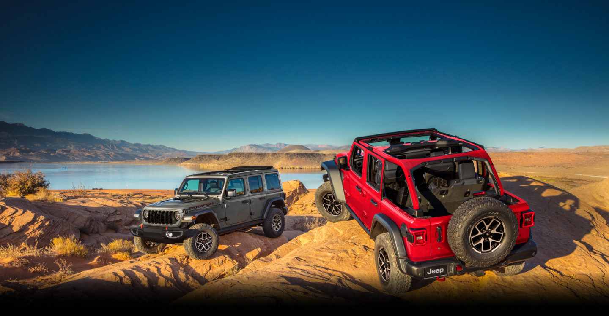

정밀한 핸들링
노면의 미세한 변화를 즉각 감지하는 스티어링 시스템으로 운전자의 의도를 정확히 구현합니다. 거친 산길이나 미끄러운 빗길에서도 오차 없는 조향 성능을 발휘하며, 어떤 도로 상황도 완벽하게 통제할 수 있게 돕습니다.
안정적인 주행 밸런스
고속 주행부터 복잡한 도심까지, 정교하게 설계된 차체 밸런스는 어떤 속도에서도 흔들림 없는 안정을 제공합니다. 노면 충격을 효과적으로 흡수하여 운전자에게 최상의 확신과 편안한 드라이빙 환경을 선사합니다.
혁신적인 드라이빙 테크
최첨단 주행 보조 시스템은 운전자의 안전을 최우선으로 생각하며 실시간으로 도로 상황을 분석합니다. 복잡한 환경에서도 능동적으로 위험을 감지하고 대응하여, 당신의 모든 여정을 더욱 스마트하고 안전하게 완성해 줍니다.
환경 대응 주행력
눈길과 험난한 도로 등 가혹한 환경에서도 지능형 4륜 구동 기술은 압도적인 퍼포먼스를 유지합니다. 바퀴마다 최적의 토크를 배분하는 강력한 접지력으로, 당신의 모험이 멈추지 않도록 독보적인 구동력을 증명합니다.
HERITAGE
전통을 이어온 오프로드의 기준
단단한 프레임 바디와 정교한 서스펜션 시스템은 지프가 지켜온 오프로드의 정수입니다. 노면의 충격을 완벽히 다스리는 강인한 하드웨어는 거친 자연 속에서도 안정적인 궤적을 그리며, 전설적인 주행 성능으로 오프로드의 새로운 기준을 제시합니다.

자유를 향한 본능,
길 위에서 완성되는 자유
WRANGLERWRANGLER 4xeGLADIATOR
GRAND CHEROKE LGRAND CHEROKE
WRANGLERWRANGLER 4xeGLADIATOR
GRAND CHEROKE LGRAND CHEROKE
사륜구동 시스템
험난한 도로와 악천후에서도
안정적인 구동력을 유지하는 핵심 기술
차체 강성 구조
강인한 프레임 설계로 어떤 환경에서도
흔들림 없는 기반을 제공
지형 대응 주행 모드
노면 상황에 맞춰 주행 성능을
최적화하는 제어 시스템
트랙션 제어 기술
미끄러운 환경에서도
구동력을 효과적으로 배분
고성능 서스펜션
충격을 흡수하고
안정적인 승차감을 유지
제동 안정 시스템
어떤 속도와 상황에서도
신뢰할 수 있는 제동 성능을 제공
01사륜구동 시스템
험난한 도로와 악천후에서도 안정적인 구동력을 유지하는 핵심 기술
02차체 강성 구조
강인한 프레임 설계로 어떤 환경에서도 흔들림 없는 기반을 제공
03지형 대응 주행 모드
노면 상황에 맞춰 주행 성능을 최적화하는 제어 시스템
04트랙션 제어 기술
미끄러운 환경에서도 구동력을 효과적으로 배분
05고성능 서스펜션
충격을 흡수하고 안정적인 승차감을 유지
06제동 안정 시스템
어떤 속도와 상황에서도 신뢰할 수 있는 제동 성능을 제공
01사륜구동 시스템
험난한 도로와 악천후에서도 안정적인 구동력을 유지하는 핵심 기술
02차체 강성 구조
강인한 프레임 설계로 어떤 환경에서도 흔들림 없는 기반을 제공
03지형 대응 주행 모드
노면 상황에 맞춰 주행 성능을 최적화하는 제어 시스템
04트랙션 제어 기술
미끄러운 환경에서도 구동력을 효과적으로 배분
05고성능 서스펜션
충격을 흡수하고 안정적인 승차감을 유지
06제동 안정 시스템
어떤 속도와 상황에서도 신뢰할 수 있는 제동 성능을 제공
ASCEND
지면을 압도하는 거침없는 존재감
고강성 스틸 프레임과 강력한 트럭의 DNA가 만났습니다.
동급 최고의 견인력과 독보적인 4x4 시스템으로
세상의 모든 험로를 평지로 만듭니다.